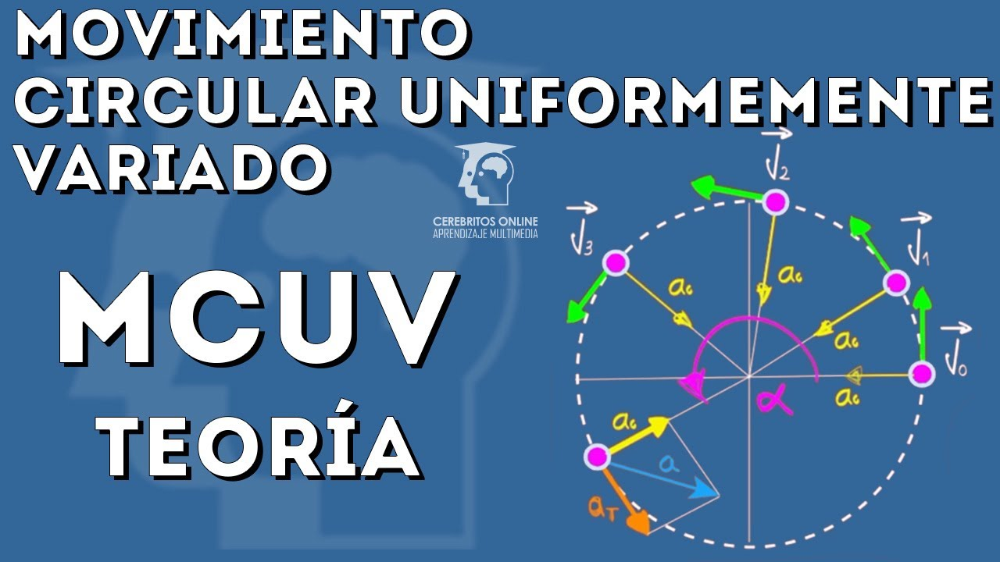

MRU - Movimiento Rectilineo Uniforme
Imagina que eres un astronauta en la Estación Espacial Internacional. Estás arreglando unos paneles solares averiados, cuando de pronto, al presionar, tu destornillador sale disparado de tus manos. Si no lo atrapas a tiempo, el destornillador estará viajando por el espacio en línea recta y a velocidad constante, a menos que algo se interponga en su camino. Esto sucede porque la herramienta se mueve con movimiento rectilíneo uniforme, o MRU.
El MRU se define el movimiento en el cual un objeto se desplaza en línea recta, en una sola dirección, recorriendo distancias iguales en el mismo intervalo de tiempo, manteniendo en todo su movimiento una velocidad constante y sin aceleración.
Recuerda que la velocidad es un vector, entonces, al ser constante, no varía ni su magnitud, ni su dirección de movimiento.
Condiciones del MRU
Para que un cuerpo esté en MRU, es necesario que se cumpla la siguiente relación:
